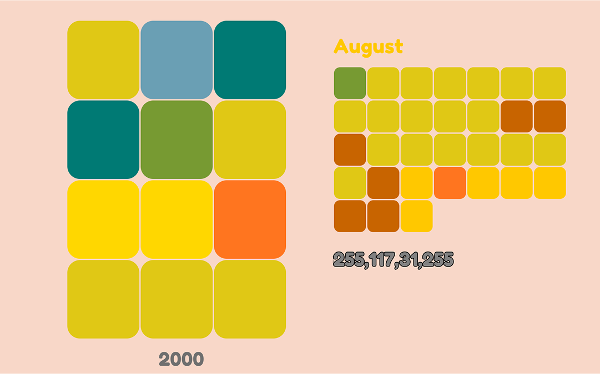
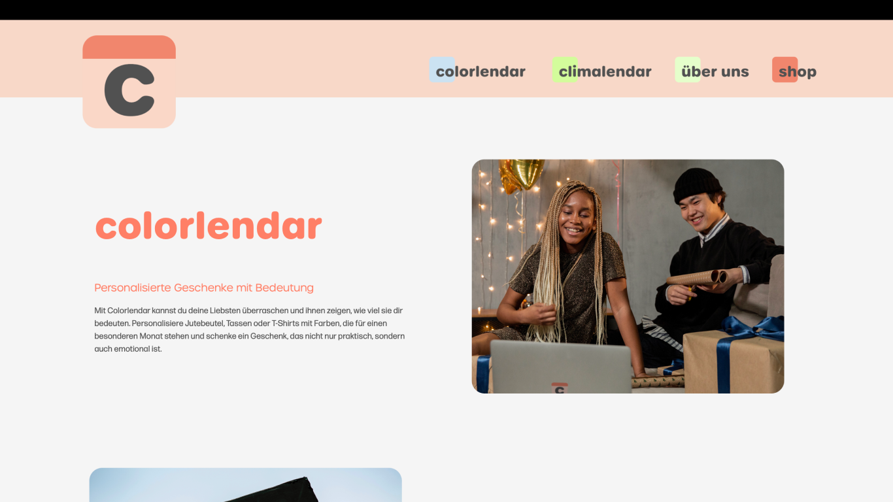
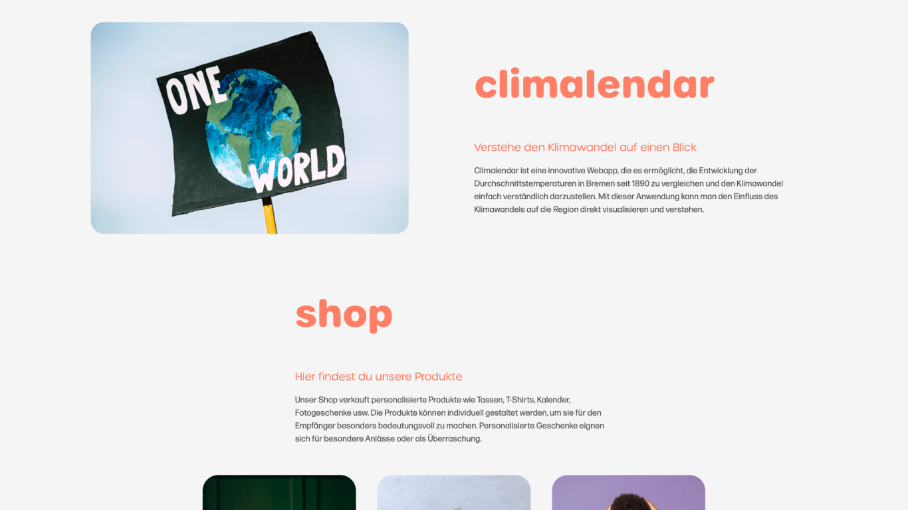
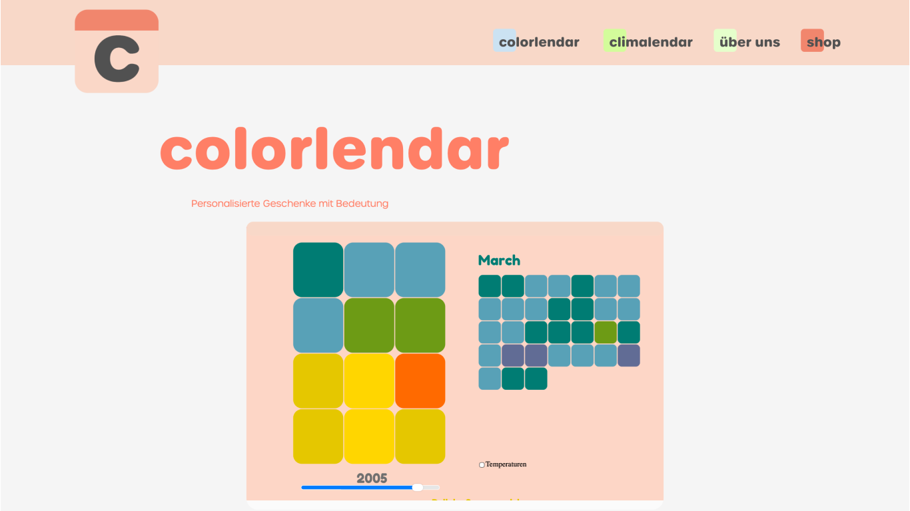
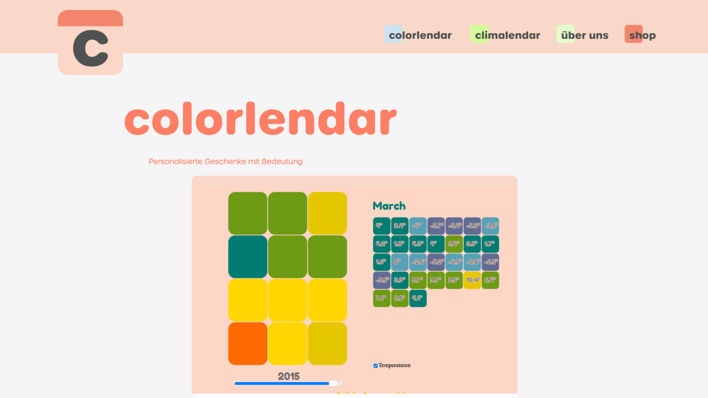
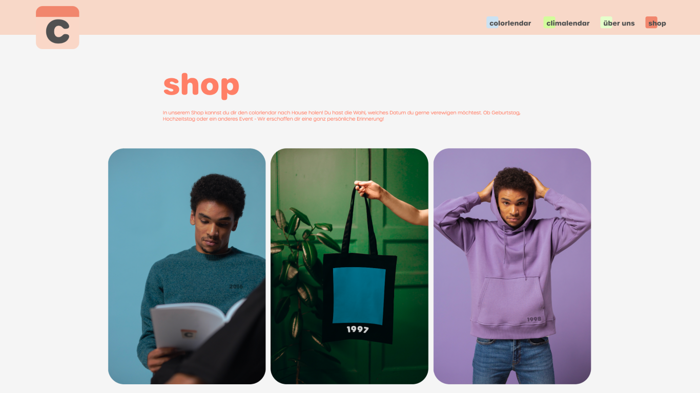
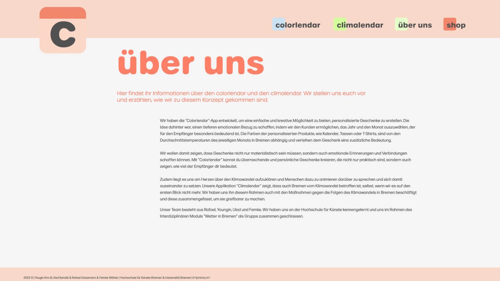

A system that transforms climate data into personalized products and visual experiences, bridging environmental awareness with emotional engagement.


This project explores how climate data can become personal.
Rather than presenting information as abstract numbers,
it translates temperature data into color-based systems
that users can interact with and apply to everyday objects.
By selecting a specific moment in time,
users generate personalized products that carry both
emotional meaning and environmental context.
Alongside this, a calendar-based visualization reveals
long-term climate changes in Bremen, grounding the experience in data.
The project creates a shift between emotional engagement and data-driven understanding,
inviting users to engage with climate change not just as information,
but as something connected to their own memory and experience.


The project consists of two interconnected platforms:
Colorlendar
A personalization system that converts monthly average temperatures in Bremen into color values.
Users can select specific dates and generate customized products (such as bags or T-shirts) based on climate data.
Climalendar
A data visualization interface that presents long-term temperature changes through a calendar format,
making climate trends more accessible and intuitive.

Group Project (4 members)
I also contributed to defining the visual logic and color system.
